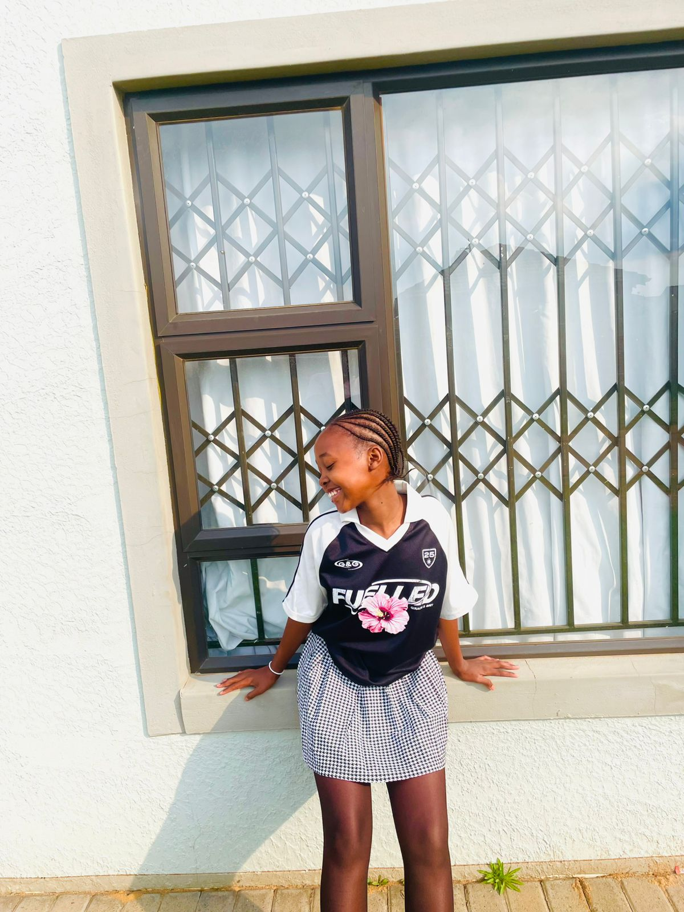

Old Mutual iWYZE @iwyze · 6h
Get iWYZE Car Insurance and enjoy Free 24/7 Roadside Assistance and many other benefits.
127K
3K
136K
1.3k
Get iWYZE Car Insurance and enjoy Free 24/7 Roadside Assistance and many other benefits.
Happiness is a choice.

The percentage of people who can solve this question correctly is under 3%. Can you solve it??.
Clock it girly❤️❤️❤️.
💙 Like this post to unlock more exclusive BTS concert 'ARIRANG' moments captured with Galaxy.
Ready for the next reveal? Stay tuned, we're just getting started.
💙 Like this post to unlock more exclusive BTS concert 'ARIRANG' moments captured with Galaxy.
Building beautiful interfaces makes users happy.